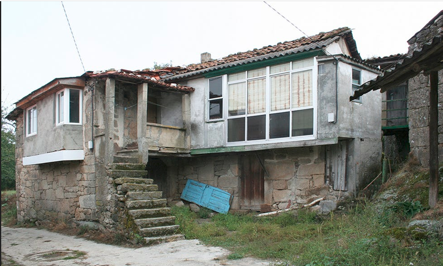

AntesAntes
O potencial oculto da túa casa de sempre
Transformamos a túa casa tradicional galega nun espazo cómodo e sostible. Analizamos a estrutura orixinal para recuperar todo o seu potencial e historia.
Arquitectura · Interiorismo · Aldea
Casa da Costa
Muros · 2025
Foto 1 de 4

AntesO potencial oculto da túa casa de sempre
Transformamos a túa casa tradicional galega nun espazo cómodo e sostible. Analizamos a estrutura orixinal para recuperar todo o seu potencial e historia.
Recuperamos a esencia da arquitectura rural galega para crear espazos cómodos, sostibles e conectados coa paisaxe.